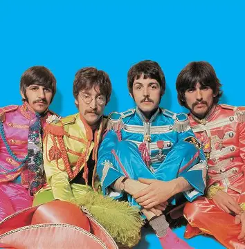

Here is a photo of them
The Beatles were an English rock band active in the 1960s. They are known for their innovative style and had a huge influence on the music industry and youth culture in the 1960s. Their band was made up of four members, John Lennon, Paul McCartney, George Harrison, and Ringo Starr.
The Beatles are my favorite band because I just like a lot of their songs. They were super popular and released a lot of music and experimented with many different music styles, so it's very easy to be a fan of them. Some of my favorite songs by them are All My Loving, And I Love Her, I'm Looking Through You, and Let it Be.
I think this is their official website: thebeatles.com
and here is their Spotify page: The Beatles | Spotify
Queen is also a British rock band that experiemented with different styles, and was popular around the same time.
David Bowie has an experimental/psychedelic style that is similar to a lot of the Beatles' work.
The Beach Boys are another band that was popular around the 1960s and have a light-hearted style to their music, which is also common in some Beatles songs.